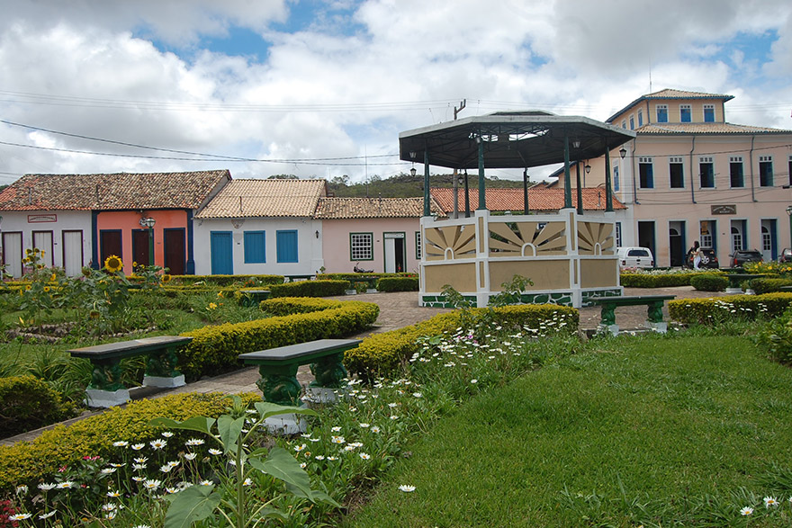
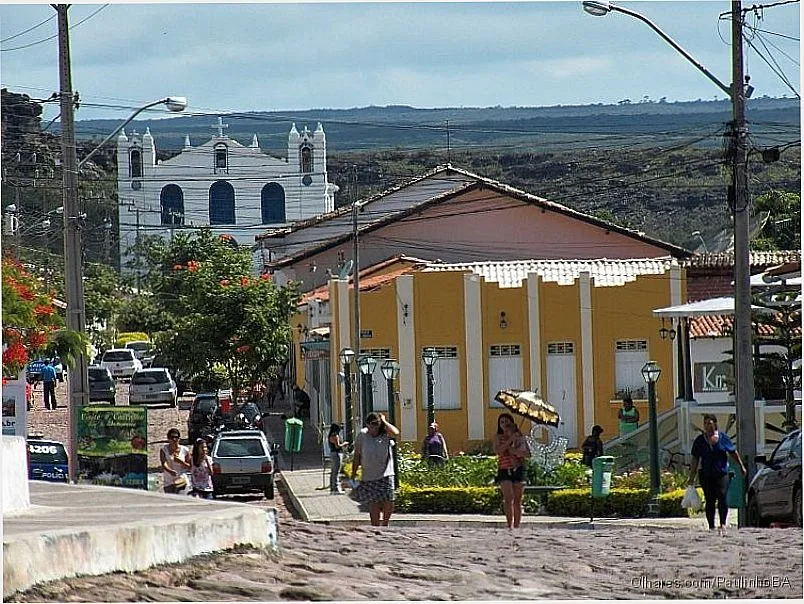

Conjunto arquitetônico e paisagístico de Mucugê (BA)

Casarão Alpina

Mucugê é um município brasileiro do estado da Bahia, localizado na Chapada Diamantina. Localiza-se a uma latitude 13º00'19" sul e a uma longitude 41º22'15" oeste, estando a uma altitude de 983 metros. Sua população na estimativa de 2024 do IBGE era de 12 650 habitantes, distribuídos por uma área de 2.462,153 km².

